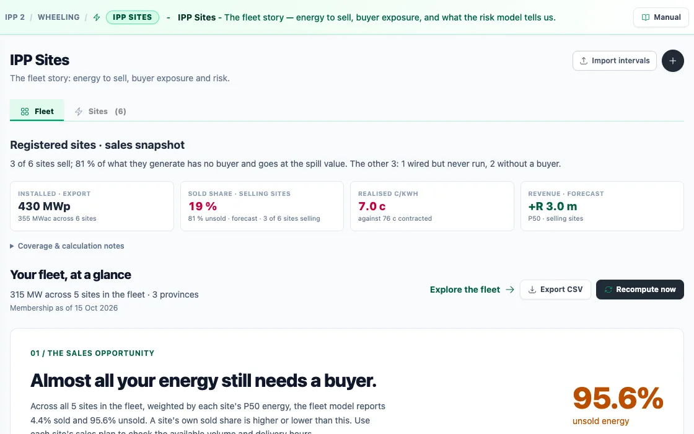
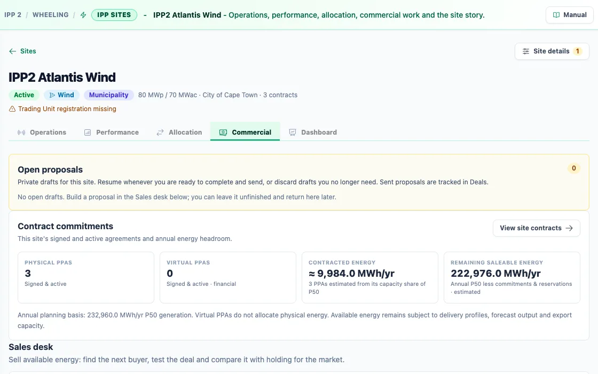
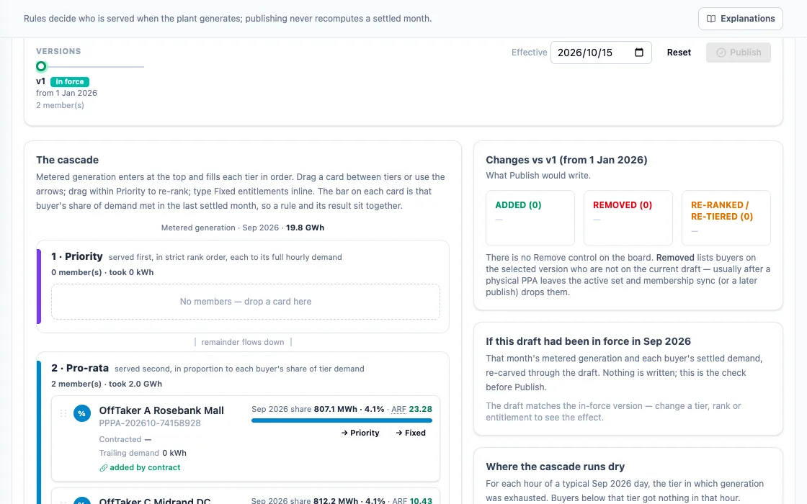

For independent power producers
Sell the gap.
Your plant's output never matches its contracts. Webill Green allocates every interval to the right PPA in a published order, shows how much energy still needs a buyer and who could take it, lodges curtailment claims with evidence, and closes the month once, with one invoice per counterparty.
The sold price tells only part of the story.
A plant generates 100 MWh and sells 60 of them under contract at 85 c/kWh. That achieved price looks healthy, but the debt is serviced from the realised price: the income spread across every megawatt-hour the plant makes. Webill Green shows both, for every site.
One plant, its output as 100 equal parts
- Achieved price: income ÷ energy sold
- 85.0 c
- What the contract says
- Realised price: income ÷ all output
- 51.0 c
- Energy still to sell, a year17,520 MWh
- What it would earn at the contract priceR 14,892,000.00
Plant output is an illustrative solar year of 43,800 MWh. Unsold is an amount of energy, not a Rand loss: it is the gap the Sales Desk sets out to fill.
Existing promises come before a new offer.
Allocation rules are published and versioned. Each interval, metered generation enters at the top and fills each tier in order. Publishing a new version never recomputes a settled month.
Conservation check
Every unit poured from the jug lands in a glass or stays in the jug. The dashed mark on each track is that buyer's demand.
A plant record, a trusted picture and a clear next action.
The fleet story opens on the number that matters: how much of what you generate still has no buyer. Every figure carries its coverage notes, so you know what is metered, what is forecast and what is missing.
- Installed and export capacity per site and across the fleet
- Sold share, realised c/kWh and the P50 revenue forecast
- Buyer exposure and what the risk model says

The Sales Desk: five steps from gap to signed offer.
The desk starts from your gap and its market value, finds who could absorb it, builds the deal, compares profit and risk against simply holding the energy, and lets you decide with the arithmetic in front of you.

- 1The gapEnergy still to sell, and what it is worth on the market
- 2Who could absorb itBuyers whose hours fit the hours you have
- 3Build the dealVolume, shape, tariff and term
- 4Profit and riskAgainst holding the energy and selling it later
- 5Compare and decideOptions side by side, then a proposal
Rules you can drag, check and publish.
Move a buyer between tiers, re-rank priority, type a fixed entitlement. Before you publish, the board re-runs last month's metered generation through your draft so you can see the effect. Nothing is written until you publish, and each version carries its effective date.
- Priority buyers are served first, in strict rank order
- Pro rata buyers share what is left in proportion to demand
- Fixed entitlements are caps, not delivery guarantees

The right hours matter as much as the price.
Before you sign a TOU-linked tariff, see what it does to your effective price. A solar plant makes most of its energy in standard hours, so multipliers that look generous can pay less than flat.
On a 43,800 MWh solar year, multipliers of 1.3, 1.0 and 0.7 come to 63.14 c/kWh, about R 812,000 a year below a flat 65 c. Webill Green runs this for your own generation profile before the deal is drafted.
Effective price on a tiny day, base 65 c
| Period | kWh | × 65 c × multiplier | Cents |
|---|---|---|---|
| Peak | 10 | × 1.3 | 845 |
| Standard | 70 | × 1.0 | 4,550 |
| Off-peak | 20 | × 0.7 | 910 |
| Σ | 100 | 6,305 ÷ 100 | 63.05 c/kWh |
A worked example. It comes in below the flat 65 c, because only a tenth of the energy lands in peak.
When the grid holds you back, claim it.
Curtailment events now exceed a hundred a year, and the industry's claims backlog is near R1.5bn. A claim without evidence waits.
- Plant telemetry under consent, sampled and stored with the period it explains
- Curtailment traces that line up the instruction, the plant's response and the lost energy
- Deemed energy calculated from the forecast the plant would have met
- Claims lodged with the evidence attached, and their status tracked to payment
The System Operator side is simulated until SAWEM opens
Close the month once.
One deterministic period close and one invoice per counterparty, built from the same ledger the settlement wrote.
- Each interval settles once against the contract that owns it, losses and network charges applied once
- One invoice per counterparty, whatever the number of sites and contracts behind it
- Corrections arrive as credit notes, never as edits to an issued document
- FINAL is final: a re-run creates a new version and keeps the old one readable
See your fleet on the demo world.
Or keep reading: the platform end to end, and the market it is built for.